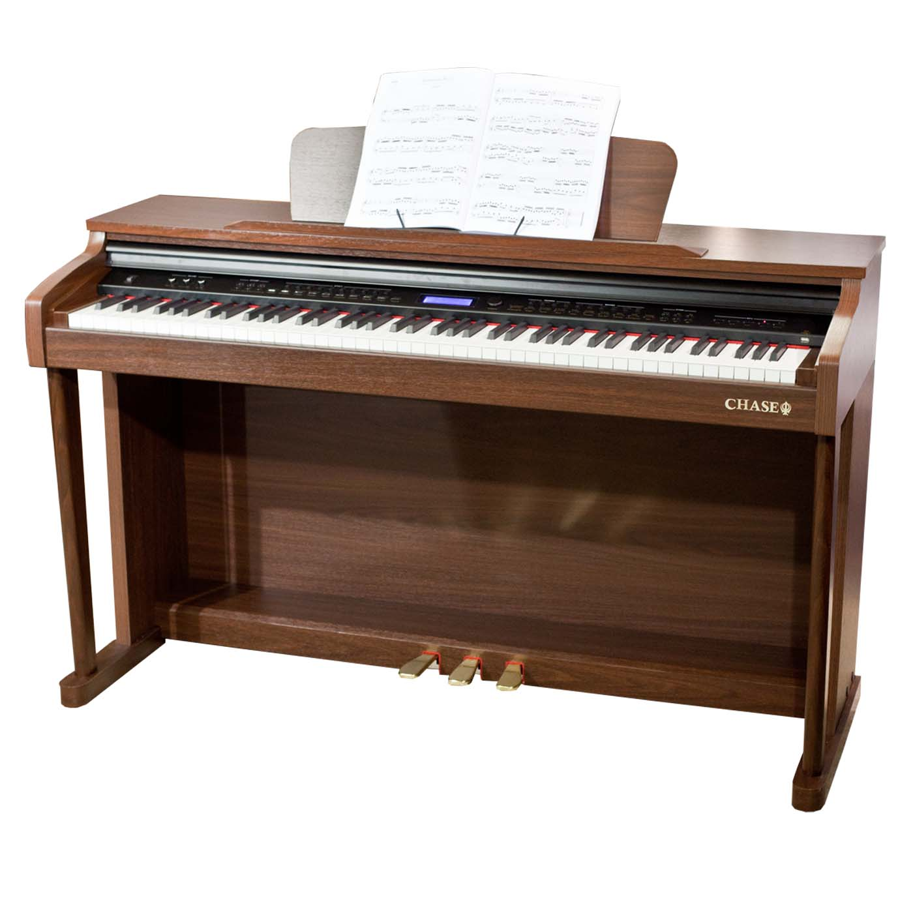

Guitar
Compare Guitar Types


Bass Guitar

The bass guitar is a stringed instrument similar in appearance to an electric guitar but with a longer neck and lower pitch, typically used to provide rhythm, depth, and harmonic foundation in music across many genres.
Bass Guitar Parts

The Neck: the part that holds the fretboard, frets and headstock.

The Headstock: the part that holds the tuning pegs and anchors the strings.

The Body: the part that holds pickups, bridge, and controls.

The Bridge: anchor point for strings and transfers vibrations to the instrument’s body.
Drums

Drums are percussion instruments played by striking them, often with sticks or hands. Found in many cultures, they provide rhythm and energy in music. Modern drum kits include bass drums, snares, toms, and cymbals, and are used in genres like rock, jazz, and pop.
Types of pianos
GrandPiano
Looks very good very grand.
ElectricPiano
Very versitile can change sound etc.
UprightPiano
More compact for home use.
ToyPiano
For children to play with, nothing serious.